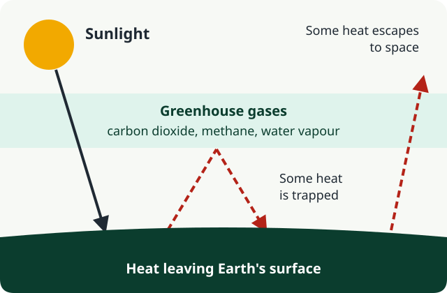

Climate basics
Climate is the pattern of weather in a place over many years. Understanding the basics makes the rest of the topic easier.

The greenhouse effect
Gases such as carbon dioxide, methane and water vapour trap some of the heat leaving Earth’s surface. This natural effect keeps the planet warm enough for life. Climate change happens when human activity adds extra greenhouse gases and strengthens the effect.
Weather and climate
Weather is what you see today: rain, sun or wind. Climate is the average pattern over decades. One cold day does not disprove climate change, just as one hot day does not prove it.
How scientists know
Scientists combine thermometer records, satellites, ocean measurements and evidence from ice and tree rings. Different teams around the world reach the same broad conclusions.
Temperature timeline
This chart shows how much warmer or cooler each year was than a fixed baseline average. Choose a time period to zoom in.
Show the numbers as a table
| Year | Difference |
|---|
Key terms
- Greenhouse gas: a gas that traps heat in the atmosphere.
- Climate: the typical weather pattern of a place over many years.
- Global warming: the rise in average global surface temperature.
Where to read more
Check facts against trusted sources: